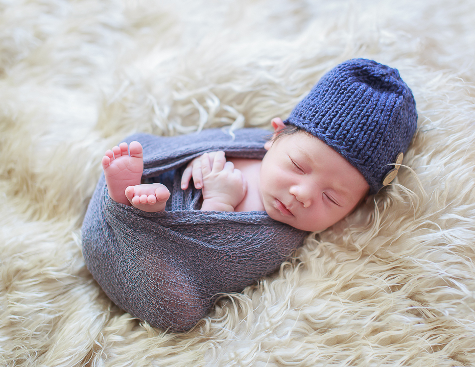

帮新生儿拍摄有很多种方法，但是有一点是可以确定的：拍摄这些小东西需要一定的技巧!而且这些技巧要比操作相机和懂得摄影知识的要求更高!
如果你给新生儿拍摄过，可能更懂我在说什么。新生儿特别脆弱，他们的骨头很软，头盖骨也没有完全长好，所以，移动他们的时候必须要很小心!事实上，在拍摄的时候，如果我给宝宝做一个土豆或者其他造型，我会让妈妈帮忙扶住。
因为新生儿才刚刚离开了妈妈子宫的“保护伞”，所以在拍摄的时候，他们会比其他人更容易生病和觉得冷，或受到更多外在压力的影响。

对于新生儿摄影中比较“敏感”的方面
有以下6大建议
1.避免香水气味
包括香皂、乳液、香水/古龙水、剃须和喷头发产品等散发出来的香味。婴儿的鼻子很敏感，你最不想发生的事情应该是宝宝打喷嚏吧!如果她/他不舒服，也会变得焦躁不安，难以安抚。
2. 拍摄前，清洁双手
当你进入新生儿所在的环境，第一件事也是最重要的一件事，那就是好好清洁你的双手!即使你跟宝宝没有接触，但是你摸过的东西，宝宝也很可能会接触到，例如婴儿床。
3.尽量避免把细菌带入拍摄环境中
如果你生病了，那就改期吧。没有什么比照顾一个生病的宝宝更让人头疼了!他们太小了，不适合吃药，所以如果你生病了，尤其发烧了，为了宝宝和家庭的着想，还是改天再帮他们拍照吧!
4.打开加热器
宝宝感到暖和的时候会特别开心而且容易入睡，所以，在保证安全的情况下，把加热器打开吧!如果你用的是一个空间加热器，小心不要让它靠近宝宝的身体或者他所在的地方。例如，如果把加热器放在宝宝的下方，它会不断加热宝宝所在的篮子，也是相当危险的!
5.可以的话，让父母自带道具
毛毯、帽子、动物玩偶、鞋子、篮子…这些可爱的道具都可以通通用在新生儿拍摄当中。如果客户能自带道具，那么拍出来的照片会更有纪念意义噢!(例如，玛丽阿姨用钩针编织的帽子，爸爸妈妈结婚时用的篮子，和爸爸小时候一样的动物玩偶。)比起重复用那些同样的道具，用自己的道具拍出来的照片会更加独特!
6.不强迫宝宝完成某个姿势
你或者宝宝的父母可能想要把宝宝放在特定的位置或特定的物体上，让拍摄效果更好。在尝试这些“高难度”动作的时候，千万要小心加小心!新生儿非常适合拍照，因为你可以随意挪动他们到你想要的位置，但是，他们是人，不是玩偶。要及时采取预防措施，因为宝宝真的很脆弱。如果他们表现出不舒服或不开心，要马上停止拍摄，或者用别的有效方法让拍摄继续下去。
总结：拍摄新生儿，宝宝的舒适度和安全一定是第一位，做好这6点你就是最好的摄影师